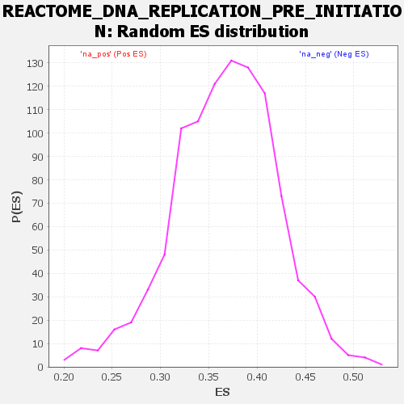

Profile of the Running ES Score & Positions of GeneSet Members on the Rank Ordered List
| Dataset | DGErankName |
| Phenotype | NoPhenotypeAvailable |
| Upregulated in class | na_neg |
| GeneSet | REACTOME_DNA_REPLICATION_PRE_INITIATION |
| Enrichment Score (ES) | -0.17413524 |
| Normalized Enrichment Score (NES) | NaN |
| Nominal p-value | NaN |
| FDR q-value | 1.0 |
| FWER p-Value | 0.0 |
| SYMBOL | RANK IN GENE LIST | RANK METRIC SCORE | RUNNING ES | CORE ENRICHMENT | |
|---|---|---|---|---|---|
| 1 | PSMB8 | 550 | 2.342 | -0.0007 | No |
| 2 | H2BC21 | 764 | 2.056 | 0.0164 | No |
| 3 | PSMC6 | 1099 | 1.767 | 0.0212 | No |
| 4 | ANAPC5 | 1372 | 1.599 | 0.0275 | No |
| 5 | PSMD5 | 1597 | 1.497 | 0.0354 | No |
| 6 | H2AJ | 1684 | 1.460 | 0.0519 | No |
| 7 | PSME1 | 1735 | 1.438 | 0.0704 | No |
| 8 | CDC26 | 2009 | 1.326 | 0.0725 | No |
| 9 | PSMA7 | 2127 | 1.277 | 0.0842 | No |
| 10 | POLE4 | 2591 | 1.133 | 0.0709 | No |
| 11 | PSMD10 | 2766 | 1.082 | 0.0758 | No |
| 12 | PSMD12 | 2830 | 1.061 | 0.0877 | No |
| 13 | H3-3A | 2962 | 1.023 | 0.0946 | No |
| 14 | PSMD9 | 3193 | 0.963 | 0.0941 | No |
| 15 | UBE2E1 | 3226 | 0.955 | 0.1065 | No |
| 16 | H2AC8 | 3757 | 0.828 | 0.0841 | No |
| 17 | RPS27A | 3871 | 0.805 | 0.0888 | No |
| 18 | RPA1 | 4058 | 0.760 | 0.0881 | No |
| 19 | PSMA3 | 4198 | 0.728 | 0.0900 | No |
| 20 | PSMD3 | 4230 | 0.720 | 0.0988 | No |
| 21 | PRIM1 | 4478 | 0.665 | 0.0926 | No |
| 22 | H2BC4 | 4506 | 0.661 | 0.1009 | No |
| 23 | PSMA2 | 4706 | 0.612 | 0.0970 | No |
| 24 | KPNA1 | 4831 | 0.589 | 0.0978 | No |
| 25 | UBE2D1 | 5363 | 0.470 | 0.0699 | No |
| 26 | H2BC8 | 5446 | 0.453 | 0.0714 | No |
| 27 | PSMB7 | 5642 | 0.413 | 0.0648 | No |
| 28 | PSMB9 | 5729 | 0.398 | 0.0652 | No |
| 29 | MCM6 | 5754 | 0.392 | 0.0695 | No |
| 30 | PSME2 | 5938 | 0.350 | 0.0628 | No |
| 31 | PSME3 | 5960 | 0.345 | 0.0666 | No |
| 32 | H2BC7 | 5984 | 0.341 | 0.0703 | No |
| 33 | ORC1 | 5993 | 0.339 | 0.0749 | No |
| 34 | PSMD11 | 6109 | 0.315 | 0.0721 | No |
| 35 | PSMB4 | 6175 | 0.300 | 0.0723 | No |
| 36 | PSMB3 | 6211 | 0.293 | 0.0745 | No |
| 37 | MCM4 | 6282 | 0.279 | 0.0741 | No |
| 38 | H4C9 | 6324 | 0.271 | 0.0755 | No |
| 39 | H3C13 | 6345 | 0.268 | 0.0782 | No |
| 40 | MCM3 | 6363 | 0.264 | 0.0811 | No |
| 41 | PSMC4 | 6437 | 0.250 | 0.0801 | No |
| 42 | ANAPC1 | 6528 | 0.233 | 0.0777 | No |
| 43 | PSMB1 | 6829 | 0.187 | 0.0607 | No |
| 44 | H2BC12 | 6960 | 0.164 | 0.0547 | No |
| 45 | UBA52 | 6965 | 0.163 | 0.0569 | No |
| 46 | PSMB2 | 7058 | 0.145 | 0.0530 | No |
| 47 | H2BC17 | 7163 | 0.127 | 0.0481 | No |
| 48 | H2AC14 | 7175 | 0.125 | 0.0492 | No |
| 49 | H2BC14 | 7253 | 0.115 | 0.0459 | No |
| 50 | H2BC13 | 7277 | 0.111 | 0.0461 | No |
| 51 | PSMC5 | 7280 | 0.111 | 0.0476 | No |
| 52 | POLE2 | 7354 | 0.100 | 0.0443 | No |
| 53 | PSMD13 | 7514 | 0.078 | 0.0350 | No |
| 54 | PSMB5 | 7601 | 0.065 | 0.0303 | No |
| 55 | ANAPC7 | 7820 | 0.037 | 0.0165 | No |
| 56 | CDC7 | 7844 | 0.034 | 0.0155 | No |
| 57 | H2BC9 | 7932 | 0.023 | 0.0101 | No |
| 58 | H2BC3 | 7938 | 0.022 | 0.0101 | No |
| 59 | PRIM2 | 8035 | 0.011 | 0.0040 | No |
| 60 | CDC23 | 8242 | -0.013 | -0.0094 | No |
| 61 | PSMD1 | 8253 | -0.014 | -0.0099 | No |
| 62 | RPA2 | 8314 | -0.019 | -0.0135 | No |
| 63 | H3-3B | 8536 | -0.046 | -0.0274 | No |
| 64 | MCM2 | 8596 | -0.051 | -0.0305 | No |
| 65 | CDT1 | 8930 | -0.089 | -0.0511 | No |
| 66 | H2BC1 | 9077 | -0.106 | -0.0592 | No |
| 67 | ANAPC11 | 9353 | -0.131 | -0.0753 | No |
| 68 | H2BC15 | 9355 | -0.131 | -0.0734 | No |
| 69 | PSMA5 | 9405 | -0.136 | -0.0746 | No |
| 70 | MCM8 | 9661 | -0.159 | -0.0890 | No |
| 71 | PSMA4 | 9741 | -0.166 | -0.0917 | No |
| 72 | KPNB1 | 9841 | -0.173 | -0.0956 | No |
| 73 | ANAPC4 | 9872 | -0.175 | -0.0949 | No |
| 74 | H2BC11 | 9935 | -0.180 | -0.0963 | No |
| 75 | H2AC6 | 9955 | -0.182 | -0.0948 | No |
| 76 | PSMA1 | 9998 | -0.185 | -0.0947 | No |
| 77 | CDC45 | 10167 | -0.198 | -0.1028 | No |
| 78 | SEM1 | 10441 | -0.218 | -0.1175 | No |
| 79 | RPA3 | 10691 | -0.235 | -0.1304 | No |
| 80 | POLE3 | 10774 | -0.241 | -0.1321 | No |
| 81 | H3C7 | 10789 | -0.242 | -0.1294 | No |
| 82 | ANAPC15 | 10868 | -0.249 | -0.1307 | No |
| 83 | ORC3 | 10960 | -0.255 | -0.1329 | No |
| 84 | H4C8 | 11029 | -0.260 | -0.1334 | No |
| 85 | ORC4 | 11423 | -0.291 | -0.1549 | No |
| 86 | ORC5 | 11468 | -0.295 | -0.1533 | No |
| 87 | PSMA6 | 11568 | -0.303 | -0.1553 | No |
| 88 | H3C10 | 11660 | -0.311 | -0.1566 | No |
| 89 | H3C12 | 11762 | -0.319 | -0.1584 | No |
| 90 | H2AC4 | 11791 | -0.322 | -0.1553 | No |
| 91 | H4C2 | 11842 | -0.326 | -0.1537 | No |
| 92 | PSMD2 | 11997 | -0.341 | -0.1587 | No |
| 93 | ORC6 | 12006 | -0.341 | -0.1540 | No |
| 94 | PSMF1 | 12124 | -0.353 | -0.1564 | No |
| 95 | CDK2 | 12177 | -0.358 | -0.1544 | No |
| 96 | ANAPC16 | 12446 | -0.384 | -0.1663 | No |
| 97 | CDC6 | 12499 | -0.389 | -0.1638 | No |
| 98 | H3C14 | 12501 | -0.389 | -0.1580 | No |
| 99 | CDC27 | 12655 | -0.405 | -0.1619 | No |
| 100 | GMNN | 12683 | -0.408 | -0.1575 | No |
| 101 | H3C11 | 12739 | -0.414 | -0.1548 | No |
| 102 | PSMB6 | 12794 | -0.422 | -0.1520 | No |
| 103 | ANAPC10 | 12911 | -0.437 | -0.1530 | No |
| 104 | ORC2 | 13232 | -0.477 | -0.1669 | Yes |
| 105 | H3C1 | 13278 | -0.483 | -0.1625 | Yes |
| 106 | H2AC20 | 13281 | -0.483 | -0.1554 | Yes |
| 107 | PSMD14 | 13323 | -0.489 | -0.1506 | Yes |
| 108 | MCM10 | 13365 | -0.496 | -0.1458 | Yes |
| 109 | H2AC19 | 13457 | -0.510 | -0.1441 | Yes |
| 110 | H2AZ2 | 13468 | -0.511 | -0.1370 | Yes |
| 111 | PSMD6 | 13497 | -0.515 | -0.1310 | Yes |
| 112 | PSMC1 | 13713 | -0.549 | -0.1369 | Yes |
| 113 | KPNA6 | 13734 | -0.554 | -0.1298 | Yes |
| 114 | PSMD4 | 13742 | -0.555 | -0.1218 | Yes |
| 115 | DBF4 | 13794 | -0.563 | -0.1166 | Yes |
| 116 | CDC16 | 13810 | -0.565 | -0.1090 | Yes |
| 117 | PSMC3 | 13837 | -0.569 | -0.1021 | Yes |
| 118 | UBE2C | 13841 | -0.569 | -0.0937 | Yes |
| 119 | UBC | 13883 | -0.578 | -0.0876 | Yes |
| 120 | UBB | 14032 | -0.610 | -0.0881 | Yes |
| 121 | FZR1 | 14168 | -0.638 | -0.0873 | Yes |
| 122 | H4C6 | 14229 | -0.655 | -0.0814 | Yes |
| 123 | POLE | 14365 | -0.686 | -0.0799 | Yes |
| 124 | H2BC10 | 14442 | -0.708 | -0.0741 | Yes |
| 125 | UBE2S | 14492 | -0.726 | -0.0663 | Yes |
| 126 | POLA2 | 14521 | -0.738 | -0.0570 | Yes |
| 127 | PSMD8 | 14618 | -0.778 | -0.0515 | Yes |
| 128 | H3C15 | 14632 | -0.781 | -0.0405 | Yes |
| 129 | ANAPC2 | 14669 | -0.798 | -0.0308 | Yes |
| 130 | PSMD7 | 14705 | -0.815 | -0.0207 | Yes |
| 131 | H2AX | 14726 | -0.825 | -0.0095 | Yes |
| 132 | PSMC2 | 14775 | -0.848 | 0.0002 | Yes |
| 133 | PSMB10 | 15103 | -1.120 | -0.0044 | Yes |
| 134 | MCM5 | 15107 | -1.125 | 0.0125 | Yes |
